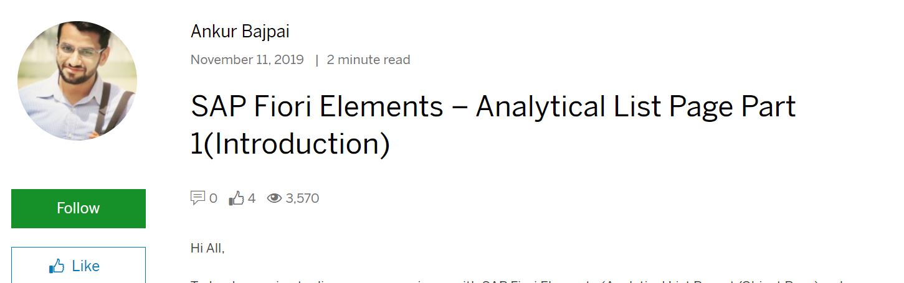
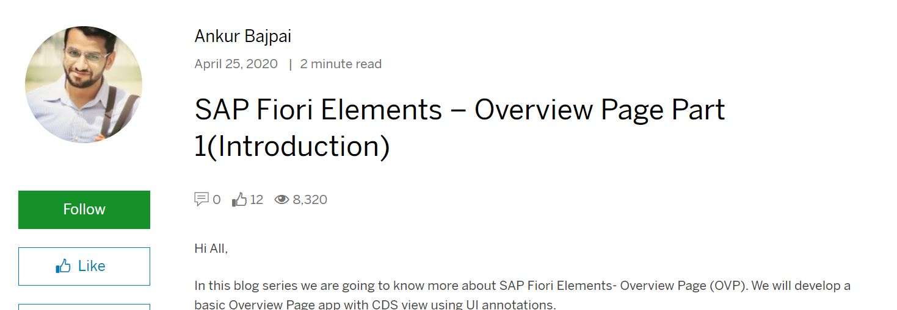

SAP Fiori Elements
List Report Page/Object Page
Developing App with SAP Fiori Elements (List Report Page/Object Page) using Northwind OData service and how to create an extension of SAP Fiori Elements

SAP Fiori Elements
List Report Page/Object Page
Developing App with SAP Fiori Elements (List Report Page/Object Page) using CDS view and Annotations (ABAP Programming Model) on SAP S/4 Hana.

SAP Fiori Elements
Analytical List Page
SAP Fiori Elements – Analytical List Page Part 1(Introduction)

SAP Fiori Elements
List Report/Object Page
SAP Fiori Elements – List Report Utilizing CDS view with Parameter